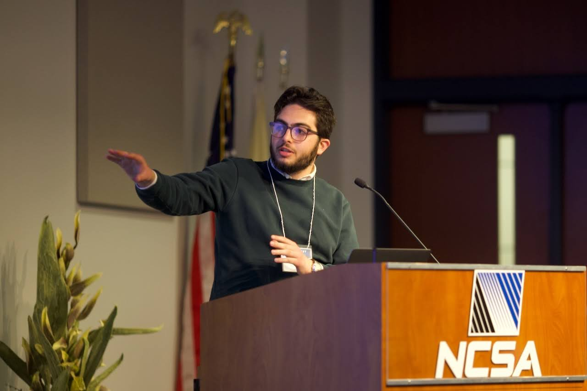

Hi, I'm Sammy Sharief
Working at the intersection
of
I build statistical & machine-learning methods to make sense of the Universe.

Decoding the cosmos with data.
I'm a PhD candidate in physics at Université Paris-Saclay (with François Lanusse, Tobias Liaudat & Samuel Farrens), working where astrophysics, machine learning, and statistics meet. My research centers on uncertainty quantification, assessing the quality of generative models and assessing calibration. Additionally, I am also interested in developing new methods to solve high-dimensional inverse problems.
Research Interests
A few of the problems I find most exciting right now.
Featured publications
A snapshot of recent papers. See the full list on the publications page.
Recent news
Let's talk science.
Interested in collaborating on lensing, inverse problems, or generative-model evaluation? I'm always happy to chat.